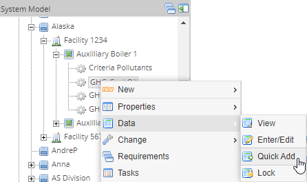
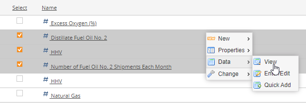
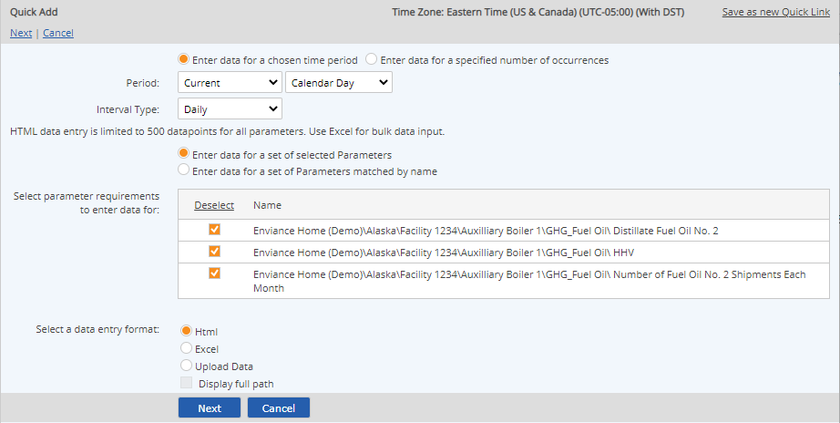
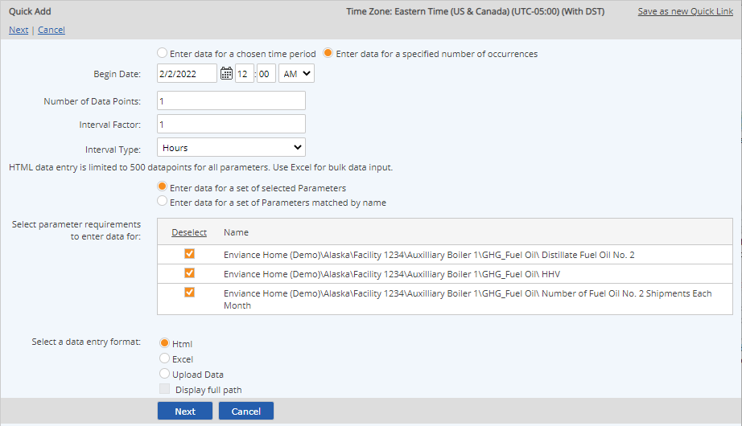
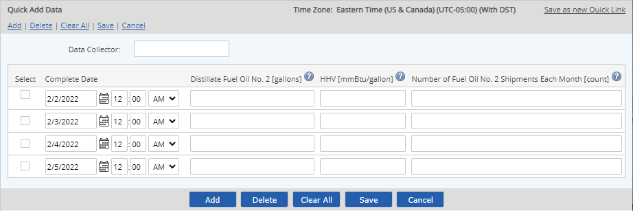

The Quick Add data entry function lets you enter multiple data points quickly by generating a form with the desired number of data rows with the date/time entered for you.
You can enter data for selected requirements in the System Model page by navigating to the location where the numeric requirements are organized. You can set up a quick link in order to make entering data for the same requirements easier in future from your desktop.
To enter data using Quick Add:
From the system model, select the location for the data entry. Right click the tree object and choose Data > Quick Add.
You may choose a facility, unit or POI to search all parameters at that location. Quick Data gives you an option to search parameters by name and to include children.

Alternately, select the parameters you want (using search to filter if necessary), right click and choose Data > Quick Add.

The Quick Add page is displayed. You have two options for generating the data entry form.
Enter data for a chosen time period: This option allows you to enter periodic data for a calendar day, month, quarter or year. Choose a relative period (such as Current Month or Previous Month). Then choose the Interval Type (data frequency). Options depend on the period you choose.

Enter data for a specific number of occurrences: Specify the start date/time, number of data points, and the interval period.

Begin Date: The first date for which you want to enter data. Time should usually be left at the default 12:00 AM for daily data points, or XX:00 for hourly-based data. (Minute-based data is generally used only by continuous emission monitoring systems.)
Number of Data Points: Total number of data points to create, starting with Begin Date.
Interval Factor: Number by which to increment each data point.
Interval Type: Unit of time to use for incrementing each data point (minutes, hours, days, months).
To enter daily data for 30 days beginning on the 15th of March, the begin date is 03/15/yyyy, the number of data points is 30, and the interval is 1 Days.
You can refine your requirements selection by selecting or de-selecting any requirements shown.
You also have the option of searching for parameters by name. Select the option: Enter data for a set of Parameters matched by name. The Location given will be the location in the system model from which you originated the request. Enter a search string in the box. You may use an askerisk (*) as a wild card. If you want to search child objects, check "Include all children."
The search filter will be applied when you click Next. It will also be saved in the criteria if you create a Quick Link
To save your data entry criteria as a Quick Link, so it can be added to your dashboard for easy access next time, click Save as Quick Link. If you use the first option, the link will open a data entry form for the relative period. The second option is less useful as a Quick Link, since it specifies a fixed start date.
Leave the data entry format at the default HTML selection. Then click Next.
The data entry screen appears. Rows are available for each data line, with a column for each parameter. The Collector field is available at the top of the page (the same Collector field value will be used for all data records in this batch).

Enter the data values for each date.
To add additional data points, select Add.
Press the Tab key when the cursor is in the last entry field on the page to create a new data row with date/time automatically incremented to the next interval.
Any row left blank will be ignored. No data point will be created for that date/time. If data already exists for that date/time in the system, it will be preserved, unless you specifically overwrite it with a zero value.
The date/time must be unique (only one data point can be stored for the same date/time).
To clear all fields, select Clear Changes. This will erase all data entered in the page.
Select Save.
If a conflict with existing data is found, you will be prompted to choose Overwrite or Cancel the process. Otherwise, a confirmation message appears informing you that the transaction has been queued.
You can check the status of a command immediately by clicking View Commands. Completed transactions have the status Succeeded. Transactions still in process may be Processing or Waiting. Failed commands should be reported to your administrator. Data from a failed transaction is not saved and will need to be resubmitted once the problem is resolved.